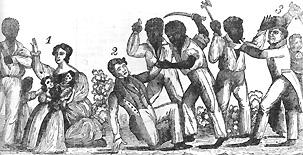

|
Violence was intrinsic to the Afro-American slave experience from colonial times
through emancipation. Slaves resisted authority by committing violent acts
against whites and also engaged in violent behavior for reasons unrelated to, or
only indirectly related to, their bondage. The average slave may have been a far
cry from the latent Spartacus suggested by some authorities on the slave
personality, but he or she certainly broke the mold of cringing Sambo
hypothesized in Stanley Elkins's once controversial Slavery: A Problem in
American Institutional and Intellectual Life (1959).

The Cat O' Nine Tails was commonly used for punishing slaves.
It tended to generate scars like the ones shown in the picture.
|
Because general slave uprisings only involved a minute percentage of the slaves
who engaged in violent aggression against the master class, violent slave
resistance should be evaluated primarily in terms of individual acts of
defiance. Though slave parents customarily inculcated obedience before white
authority within the upbringing of their children, they rarely advised abject
submission. When sufficiently provoked by owners, overseers, other whites, or
blacks enforcing white rule (for example, fellow slaves who participated in the
pursuit of fugitives), some slaves responded with physical violence. Punishment,
particularly whippings, triggered a high percentage of slave assaults on whites.
All kinds of grievances, however, including anger about liberties taken by
whites with black women, provoked slave violence. Some individual acts of
violence are best attributed to a smoldering resentment of bondage itself. Not
long before his abortive 1800 revolt, Gabriel Prosser bit off the ear of a white
who had caught another black stealing a hog--an act most likely prompted by the
kind of yearning for freedom that sparked his insurrection plot.
Brawls and criminal acts such as rape were a part of life within the slave
community. Blacks fought, and sometimes murdered, over sexual jealousies,
thefts, and an infinite variety of other provocations. In some instances, such
behavior was instigated by whites; slave narratives and ex-slave interviews
occasionally allude to sadistic owners and overseers who enjoyed the spectacle
of slaves fighting among themselves to the point of even insisting upon it. Most
masters, however, gave high priority to order as a virtue in labor management,
and it was more common for owners to attempt to suppress, not foment, violent
flare-ups between slaves.
There is no way to calculate how much the rhythm of intra-race aggression
related to frustration over the inability of most blacks to strike effective
blows against white authority, but the correlation can be presumed to be
significant. Slaves, though sometimes elevating violent resisters such as Nat
Turner into folk heroes, nonetheless comprehended all too well that attacks on
whites almost invariably brought severe retribution upon themselves and that
they also risked jeopardizing the welfare of relatives and other slaves. Recent
research has discovered a pattern of self-inflicted violence among Afro-American
slaves, including suicide, infanticide, and mutilation of one's own limbs. Many
such instances can be attributed to slave impotence before the power of the
master class. Certainly the American Civil War revealed what could happen when
the slaveholders' controls were relaxed. While Afro-Americans never exploded in
the kind of general, violent orgy so feared by many Southern whites, they
nevertheless destroyed enough property and committed sufficient numbers of
assaults upon whites (including retaliatory whippings of former masters and
overseers) to belie entirely prewar proslavery propaganda that portrayed slaves
as docile and content with their fate.
|

An artist's recreation of Nat Turner's revolt, in which 55
people were killed.
|
Warfare in America, from the colonial period through the Civil War, often
legitimized black violence. In colonial times, for instance, slaves generally
were excluded from the militia. Yet in struggles like South Carolina's Yamassee
War (1715-1716) when insufficient white manpower seemed to spell impending
defeat, white authorities proved themselves quite willing to arm blacks. Such
pragmatism continued during the American Revolution, when both the British and
the American states used slaves in land and sea forces. Slaves also fought in
later American wars, including the Civil War, when a high percentage of the
approximately 18O,000 black soldiers and sailors in Union military ranks were
"contrabands" and--after the Emancipation Proclamation--former slaves. Even the
Confederacy resorted to arming slave soldiers in the waning moments of the war.
Afro-American slave violence remains a controversial topic. To establish that
slaves in the American colonies, and then the United States, committed violent
acts is not the same as to certify that they were as prone to violence as
victims of other Western Hemisphere slave societies, not to mention slaves
through the epochs. Some authorities, hypothesizing that slaves in the United
States were less violent than other slave groups, credit evangelical
Christianity with fostering "accommodationist" patterns among Afro-American
slaves. They assert that the slaves, anticipating glory in the afterlife,
repressed violent tendencies. Other scholars, however, have contended that the
Second Great Awakening, with its egalitarian message of access to salvation for
all, inspired slave resistance and accompanying violence. Intuitive logic
suggests that antebellum Southern slaves, in particular, should have been
violent; their masters' mores exalted dueling and other manifestations of an
aggressive social code. According to this argument, such a violent white culture
must have filtered down into the slave community at least to a limited degree.
Quantification offers some help regarding the problem of slave violence.
Statistical data has been assembled, for example, that shows that in the
Anderson and Spartanburg districts of South Carolina between 1818 and 186O, a
much lower percentage of slave than white prosecutions in court concerned the
crime of assault. But the applicability of such findings, since a high
proportion of incidents of slave violence went unreported, is limited. Perhaps a
more fruitful line of inquiry considers the social context of slave violence.
How much did the presence of free black role models affect the likelihood of
Afro-Americans' committing violent acts? Did different slave classes
(plantation, household, urban, factory, etc.) channel their aggressive impulses
in similar or disparate directions? In a monograph about slave resistance in
eighteenth-century Virginia, historian Gerald W. Mullin demonstrated the
potential for such an approach. According to Mullin, plantation slaves,
particularly recent arrivals from Africa, tended toward spontaneous assaults
against individual whites. Skilled, acculturated slaves, in contrast, inclined
to more planned, freedom-oriented violence such as a general slave uprising.
Much more, however, remains to be learned about Afro-American slave violence.
Source: Randall M. Miller and John David Smith, eds. Dictionary of
Afro-American Slavery (Westport, CT: Praeger, 1997), 776-79.
|